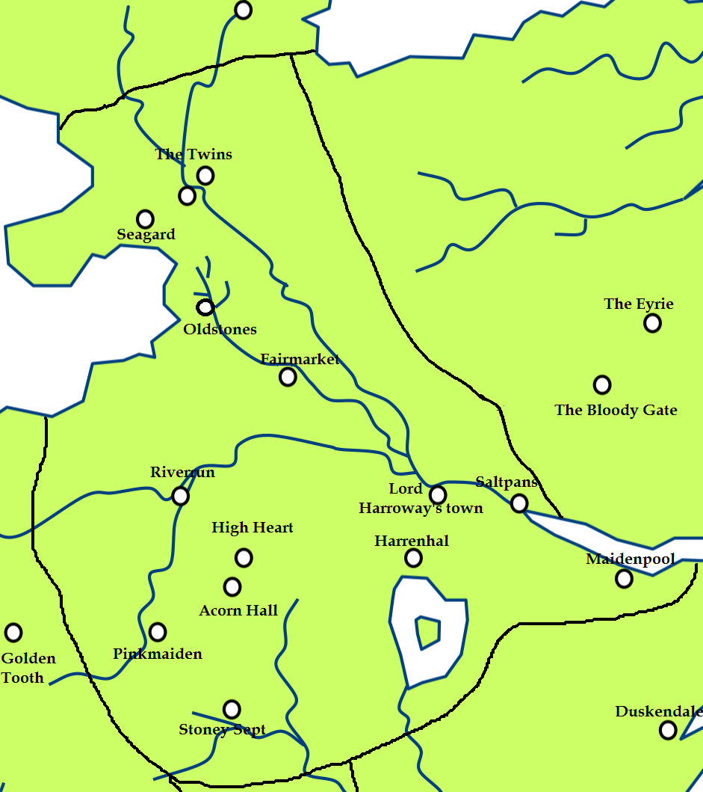

Riverrun
Riverrun is a castle, the ancestral seat of House Tully, held by House Tully for over a thousand years. It’s situated in the Riverlands, at the point where the Tumblestone and Red Fork rivers meet.
Riverrun is a strong three-sided castle, although not especially large. The castle is bordered on two sides by rivers, and on the west a third side fronts on a massive manmade ditch, in time of danger threatens sluice gates can be opened to fill a wide moat and leave the castle surrounded on all three sides by water, turning Riverrun into an island, leave it practically unassailable.
The castle has sandstone walls which rise sheer from the water, it’s the battlements are crenelated and has arrow loops, The towers command the opposite shores. Inside located a the keep.Properly garrisoned, Riverrun can hold supplies for men and horses for as long as two years, a garrison of two hundred men is larger than Riverrun requires in most circumstances.
Map on Next page.
